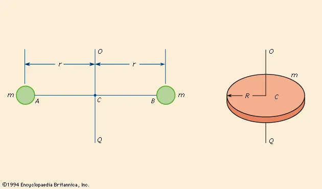
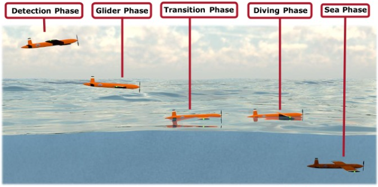
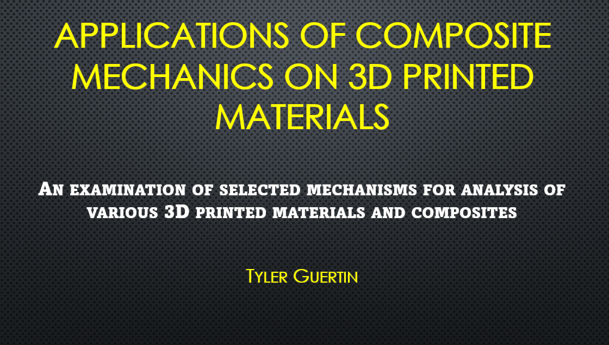
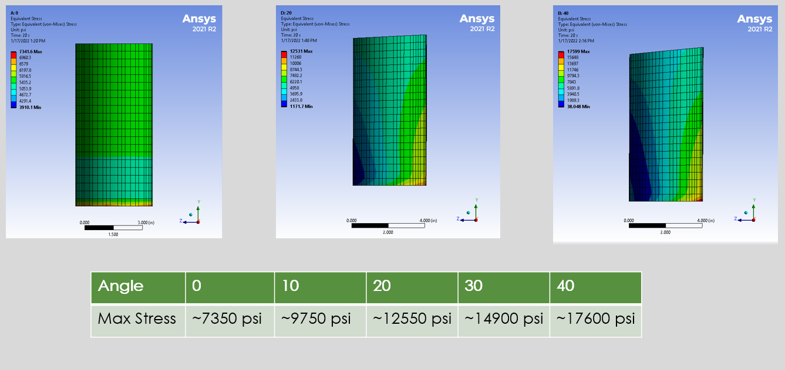

Analyzing the effects of various risks external to aircraft systems for the Skai aircraft as part of the aircraft system safety assesment per ARP4761. Particular risks analyzed included bird strikes, fires, rotor blade loss, etc. Each analysis concludes by generating recommendations and requirements for redundancy and safety systems implementation. I analyzed thirty total risks with various methods including validated analysis models from the FAA, research, trajectory analysis, and empirical formulas.

Using the parallel axis theorem and coordinate transformations, I approximated the Skai prototype 1 inertias for 1) collective equipment moment of inertia and 2) skin structure moment of inertia. I also set up a system for tracking the moment of inertias for Skai prototype 2. This allows the engineering time to track the inertia change more accurately and for the flight simulator to be consistently up to date for test pilot use.

For the course AE4723, aircraft dynamics and controls, I worked in a team of 3 to reverse engineer the longitudinal and lateral dynamics of a Boeing 747. Control derivatives and settling times for vaious modes were calculated using researched data, and control responses were tracked and then verified in XFLR5 and FlightGear flight simulator. I worked on graphing control responses for different gains to align results with those that were measured in the flight simulation software. MATLAB was used to model a simple control system.

During this project, my team of 6 WPI students worked to create a concept for a vehicle capable of traveling between air and water, culminating in a final presentation and comprehensive report. My major contributions include wing design, actuation design, as well as simulations of aerodynamics and structural properties of the wings on the vehicle. Simulations were conducted in Solidworks and verification consisted of the vortex panel method for a constant cross section wing.

I researched the relationship between composite materials and the layup pattern of 3D printed materials and created a short research paper on the topic. During my research I compiled information on the constituitive relationship of composite materials applying very well to layered 3d printed composites. I also found that printed composites in different layered orientations have similar failure critierias to standard composite materials, which could prove useful in prototyping.

During my first weeks at Yankee Engineering and Testing, I noticed that skewed results were being achieved when testing concrete samples. I felt that this may have been due to conrete sample unlevelness. Using ANSYS mechanical, I set up a simple analysis to view the collection of stresses and their locations on test specimens. This analysis validated the need for procedural changes in testing.